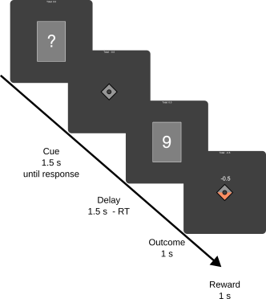

hcp_gambling
Human Connectome Gambling Task
This is a re-implementation of the gambling task described by [^delgado2000] and used in the human connectome project [^vanessen2012].
Task description

In this task participants participants are asked to do a simple gamble. Guess if the next card’s value is greater or less than five. If the guess is correct, participants receive a reward of 1 point, if it is incorrect, they lose $\frac{1}{2}$ points, if the outcome is 5, they do not get any points. Unbeknown to the participant, the outcome of the gamble was pre-specified, so their responses did not have an effect.
Each trial begins with cueing the participant to make a guess. This cue is indicated by a questionnaire in the middle of the central card. Participants have 1.5 s to usher their response. Pressing left to guess smaller than 5 or right to guess larger than 5. After the response, the card disappears and a fixation cross is displayed. The duration of the fixation cross is determined by the time left in the response window. Afterwards, the card appears again with a number in the middle of the card (for 1 s). Then the card disappears and reward feedback is displayed for 1 s.
Similarly to the task in the HCP, trials were created as blocks of 8 trials. There being a total of six potential blocks. The three winning blocks consist of 6 winning trials and either 2 neutral, 2 lose, or 1 lose and 1 neutral trial. The three losing blocks consist of 6 losing trials, and either 2 neutral, 2 win, or 1 neutral and 1 winning trial.
Each participant experiences the 6 described blocks and one randomly drawn block from the winning block, and one randomly drawn losing block.
The block orders were randomized as sets of 4, so that each set of 4 blocks contains 2 winning and 2 losing blocks, the trials of each block were randomly permuted.
After each block there is a 15 s break.
References
[[^vanessen2012]: Van Essen, D. C., Ugurbil, K., Auerbach, E., Barch, D., Behrens, T. E. J., Bucholz, R., Chang, A., Chen, L., Corbetta, M., Curtiss, S. W., Della Penna, S., Feinberg, D., Glasser, M. F., Harel, N., Heath, A. C., Larson-Prior, L., Marcus, D., Michalareas, G., Moeller, S., … Yacoub, E. (2012). The Human Connectome Project: A data acquisition perspective. NeuroImage, 62(4), 2222–2231. https://doi.org/10.1016/j.neuroimage.2012.02.018